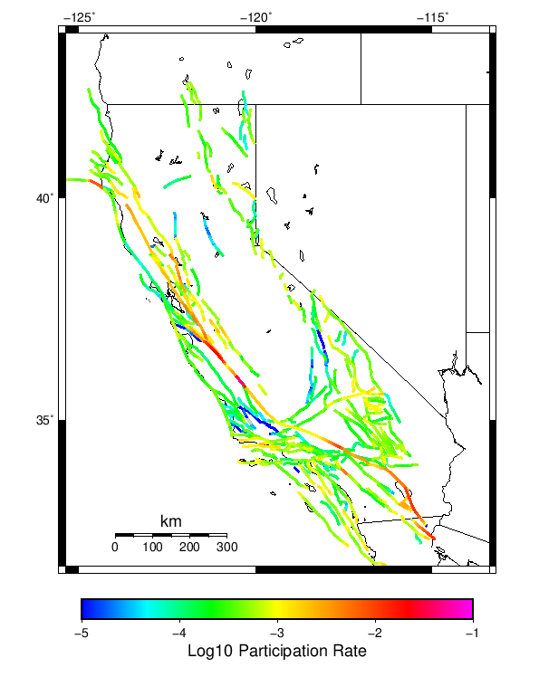

Start 1919, 100 yr, Log10(k)=-2.31, p=1.08, c=0.04, Spontaneous Results
| Start 1919, 100 yr, Log10(k)=-2.31, p=1.08, c=0.04, Spontaneous |
|---|
| Num Simulations | 1000 |
| Start Time | 1919/01/01 00:00:00 UTC |
| Start Time Epoch Milliseconds | -1609459200000 |
| Duration | 100 Years |
| Includes Spontaneous? | true |
| Trigger Ruptures | (none) |
| Historical Ruptures | (none) |
| Config Generated With | u3etas_config_builder.sh --start-year 1919 --num-simulations 1000 --duration-years 100 --include-spontaneous --etas-k -2.31 --etas-p 1.08 --etas-c 0.04 --hpc-site USC_HPC --nodes 36 --hours 24 --queue scec |
Table Of Contents
Magnitude Frequency Distribution
(top)
Legend
- Mean (thick black line): mean annual rate across all 1000 catalogs
- 2.5%,97.5% (thin black lines): annual rate percentiles across all 1000 catalogs
- Median (thin blue line): median annual rate across all 1000 catalogs
- Mode (thin cyan line): modal annual rate across all 1000 catalogs (scaled to annualized value)
- 100 yr Probability (thin red line): 100 year probability calculated as the fraction of catalogs with at least 1 occurrence
- 100 yr Supraseismogenic Probability (thin dashed red line): same as above, but only for supraseismogenic ruptures on explicitly modeled UCERF3 faults
- 95% Conf (light red shaded region): binomial 95% confidence bounds on probability

| Mag | Mean | 2.5 %ile | 97.5 %ile | Median | Mode | 100 yr Probability | 100 yr Supra-Seis Prob |
|---|
| M≥5 | 8.016 | 6.810 | 9.420 | 7.980 | 8.000 | 1.000 (100.00%) | 1.000 (100.00%) |
| M≥5.1 | 6.343 | 5.380 | 7.520 | 6.310 | 6.450 | 1.000 (100.00%) | 1.000 (100.00%) |
| M≥5.2 | 5.018 | 4.200 | 6.010 | 4.990 | 5.120 | 1.000 (100.00%) | 1.000 (100.00%) |
| M≥5.3 | 3.963 | 3.270 | 4.750 | 3.950 | 3.950 | 1.000 (100.00%) | 1.000 (100.00%) |
| M≥5.4 | 3.127 | 2.550 | 3.760 | 3.110 | 3.080 | 1.000 (100.00%) | 1.000 (100.00%) |
| M≥5.5 | 2.468 | 1.990 | 2.990 | 2.450 | 2.380 | 1.000 (100.00%) | 1.000 (100.00%) |
| M≥5.6 | 1.941 | 1.540 | 2.410 | 1.930 | 2.020 | 1.000 (100.00%) | 1.000 (100.00%) |
| M≥5.7 | 1.521 | 1.190 | 1.910 | 1.510 | 1.600 | 1.000 (100.00%) | 1.000 (100.00%) |
| M≥5.8 | 1.184 | 0.910 | 1.510 | 1.180 | 1.170 | 1.000 (100.00%) | 1.000 (100.00%) |
| M≥5.9 | 0.910 | 0.680 | 1.170 | 0.910 | 0.940 | 1.000 (100.00%) | 1.000 (100.00%) |
| M≥6 | 0.723 | 0.530 | 0.960 | 0.720 | 0.720 | 1.000 (100.00%) | 1.000 (100.00%) |
| M≥6.1 | 0.558 | 0.390 | 0.750 | 0.550 | 0.600 | 1.000 (100.00%) | 1.000 (100.00%) |
| M≥6.2 | 0.439 | 0.290 | 0.600 | 0.440 | 0.440 | 1.000 (100.00%) | 1.000 (100.00%) |
| M≥6.3 | 0.344 | 0.230 | 0.480 | 0.340 | 0.370 | 1.000 (100.00%) | 1.000 (100.00%) |
| M≥6.4 | 0.265 | 0.160 | 0.380 | 0.260 | 0.270 | 1.000 (100.00%) | 1.000 (100.00%) |
| M≥6.5 | 0.201 | 0.110 | 0.300 | 0.200 | 0.180 | 1.000 (100.00%) | 1.000 (100.00%) |
| M≥6.6 | 0.154 | 0.080 | 0.240 | 0.150 | 0.150 | 1.000 (100.00%) | 1.000 (100.00%) |
| M≥6.7 | 0.116 | 0.050 | 0.190 | 0.110 | 0.120 | 1.000 (100.00%) | 1.000 (100.00%) |
| M≥6.8 | 0.088 | 0.030 | 0.150 | 0.090 | 0.090 | 1.000 (100.00%) | 1.000 (100.00%) |
| M≥6.9 | 0.067 | 0.020 | 0.120 | 0.070 | 0.070 | 1.000 (100.00%) | 0.997 (99.70%) |
| M≥7 | 0.050 | 0.010 | 0.100 | 0.050 | 0.040 | 0.994 (99.40%) | 0.989 (98.90%) |
| M≥7.1 | 0.036 | 0.000 | 0.080 | 0.030 | 0.030 | 0.969 (96.90%) | 0.962 (96.20%) |
| M≥7.2 | 0.025 | 0.000 | 0.060 | 0.020 | 0.020 | 0.924 (92.40%) | 0.905 (90.50%) |
| M≥7.3 | 0.018 | 0.000 | 0.050 | 0.020 | 0.010 | 0.852 (85.20%) | 0.837 (83.70%) |
| M≥7.4 | 0.012 | 0.000 | 0.040 | 0.010 | 0.010 | 0.708 (70.80%) | 0.698 (69.80%) |
| M≥7.5 | 7.48E-3 | 0.000 | 0.030 | 0.010 | 0.000 | 0.530 (53.00%) | 0.527 (52.70%) |
| M≥7.6 | 4.42E-3 | 0.000 | 0.020 | 0.000 | 0.000 | 0.370 (37.00%) | 0.369 (36.90%) |
| M≥7.7 | 2.18E-3 | 0.000 | 0.010 | 0.000 | 0.000 | 0.204 (20.40%) | 0.204 (20.40%) |
| M≥7.8 | 1.12E-3 | 0.000 | 0.010 | 0.000 | 0.000 | 0.109 (10.90%) | 0.109 (10.90%) |
| M≥7.9 | 5.30E-4 | 0.000 | 0.010 | 0.000 | 0.000 | 0.052 (5.20%) | 0.052 (5.20%) |
| M≥8 | 2.70E-4 | 0.000 | 0.010 | 0.000 | 0.000 | 0.027 (2.70%) | 0.027 (2.70%) |
| M≥8.1 | 9.00E-5 | 0.000 | 0.000 | 0.000 | 0.000 | 9.00E-3 (0.90%) | 9.00E-3 (0.90%) |
| M≥8.2 | 4.00E-5 | 0.000 | 0.000 | 0.000 | 0.000 | 4.00E-3 (0.40%) | 4.00E-3 (0.40%) |
| M≥8.3 | 2.00E-5 | 0.000 | 0.000 | 0.000 | 0.000 | 2.00E-3 (0.20%) | 2.00E-3 (0.20%) |
| M≥8.4 | 0.000 | 0.000 | 0.000 | 0.000 | 0.000 | 0.000 (0.00%) | 0.000 (0.00%) |
| M≥8.5 | 0.000 | 0.000 | 0.000 | 0.000 | 0.000 | 0.000 (0.00%) | 0.000 (0.00%) |
| M≥8.6 | 0.000 | 0.000 | 0.000 | 0.000 | 0.000 | 0.000 (0.00%) | 0.000 (0.00%) |
| M≥8.7 | 0.000 | 0.000 | 0.000 | 0.000 | 0.000 | 0.000 (0.00%) | 0.000 (0.00%) |
| M≥8.8 | 0.000 | 0.000 | 0.000 | 0.000 | 0.000 | 0.000 (0.00%) | 0.000 (0.00%) |
| M≥8.9 | 0.000 | 0.000 | 0.000 | 0.000 | 0.000 | 0.000 (0.00%) | 0.000 (0.00%) |
| M≥9 | 0.000 | 0.000 | 0.000 | 0.000 | 0.000 | 0.000 (0.00%) | 0.000 (0.00%) |
Long Term Rate Variability
(top)
80 Year Variability
(top)

Download CSV Here
| Magnitude | Mean | Median | Mode | Std. Dev. | 2.5 %-ile | 16 %-ile | 84 %-ile | 97.5 %-ile |
|---|
| 5.0 | 8.019663 | 7.95 | 8.25 | 0.76316243 | 6.7125 | 7.2875 | 8.75 | 9.65 |
| 5.1 | 6.345675 | 6.3125 | 6.2375 | 0.62291324 | 5.275 | 5.7 | 6.925 | 7.675 |
| 5.2 | 5.0178375 | 5.0 | 5.075 | 0.5170208 | 4.125 | 4.4875 | 5.525 | 6.1125 |
| 5.3 | 3.962275 | 3.95 | 3.9125 | 0.4264603 | 3.225 | 3.525 | 4.375 | 4.875 |
| 5.4 | 3.1256 | 3.1125 | 3.1125 | 0.3517442 | 2.5 | 2.7625 | 3.475 | 3.8625 |
| 5.5 | 2.4666126 | 2.45 | 2.4625 | 0.29155424 | 1.9375 | 2.175 | 2.75 | 3.075 |
| 5.6 | 1.9397625 | 1.925 | 2.0875 | 0.24072583 | 1.525 | 1.6875 | 2.175 | 2.4375 |
| 5.7 | 1.5197 | 1.5125 | 1.5375 | 0.20036653 | 1.15 | 1.325 | 1.7125 | 1.95 |
| 5.8 | 1.18585 | 1.1875 | 1.25 | 0.16747765 | 0.8625 | 1.025 | 1.35 | 1.5375 |
| 5.9 | 0.9126 | 0.9125 | 0.925 | 0.13921991 | 0.65 | 0.775 | 1.05 | 1.2125 |
| 6.0 | 0.7253625 | 0.7125 | 0.7 | 0.11788839 | 0.5125 | 0.6125 | 0.8375 | 0.975 |
| 6.1 | 0.559575 | 0.55 | 0.5375 | 0.09983348 | 0.3625 | 0.4625 | 0.6625 | 0.7625 |
| 6.2 | 0.4394875 | 0.4375 | 0.425 | 0.085498996 | 0.275 | 0.35 | 0.525 | 0.6125 |
| 6.3 | 0.344975 | 0.3375 | 0.3 | 0.07337921 | 0.2125 | 0.275 | 0.425 | 0.5 |
| 6.4 | 0.265175 | 0.2625 | 0.2875 | 0.06412454 | 0.15 | 0.2 | 0.325 | 0.4 |
| 6.5 | 0.2014 | 0.2 | 0.2 | 0.055583876 | 0.1 | 0.15 | 0.2625 | 0.325 |
| 6.6 | 0.1532625 | 0.15 | 0.1375 | 0.04736368 | 0.075 | 0.1 | 0.2 | 0.25 |
| 6.7 | 0.114625 | 0.1125 | 0.125 | 0.040329713 | 0.0375 | 0.075 | 0.15 | 0.2 |
| 6.8 | 0.087225 | 0.0875 | 0.075 | 0.03405634 | 0.025 | 0.05 | 0.125 | 0.15 |
| 6.9 | 0.06615 | 0.0625 | 0.0625 | 0.029681576 | 0.0125 | 0.0375 | 0.1 | 0.125 |
| 7.0 | 0.0492 | 0.05 | 0.05 | 0.02523632 | 0.0125 | 0.025 | 0.075 | 0.1 |
| 7.1 | 0.0351125 | 0.0375 | 0.025 | 0.021328643 | 0.0 | 0.0125 | 0.0625 | 0.0875 |
| 7.2 | 0.0238625 | 0.025 | 0.025 | 0.017511968 | 0.0 | 0.0125 | 0.0375 | 0.0625 |
| 7.3 | 0.0174125 | 0.0125 | 0.0125 | 0.0144800125 | 0.0 | 0.0 | 0.0375 | 0.05 |
| 7.4 | 0.0115125 | 0.0125 | 0.0 | 0.012026563 | 0.0 | 0.0 | 0.025 | 0.0375 |
| 7.5 | 0.0071625 | 0.0 | 0.0 | 0.009529987 | 0.0 | 0.0 | 0.0125 | 0.025 |
| 7.6 | 0.0040875 | 0.0 | 0.0 | 0.006963985 | 0.0 | 0.0 | 0.0125 | 0.025 |
| 7.7 | 0.001925 | 0.0 | 0.0 | 0.0048158662 | 0.0 | 0.0 | 0.0 | 0.0125 |
| 7.8 | 8.625E-4 | 0.0 | 0.0 | 0.0032669583 | 0.0 | 0.0 | 0.0 | 0.0125 |
| 7.9 | 3.75E-4 | 0.0 | 0.0 | 0.002205502 | 0.0 | 0.0 | 0.0 | 0.0125 |
| 8.0 | 2.375E-4 | 0.0 | 0.0 | 0.001707413 | 0.0 | 0.0 | 0.0 | 0.0 |
| 8.1 | 5.0E-5 | 0.0 | 0.0 | 7.893815E-4 | 0.0 | 0.0 | 0.0 | 0.0 |
| 8.2 | 2.5E-5 | 0.0 | 0.0 | 5.5873714E-4 | 0.0 | 0.0 | 0.0 | 0.0 |
| 8.3 | 2.5E-5 | 0.0 | 0.0 | 5.5873714E-4 | 0.0 | 0.0 | 0.0 | 0.0 |
| 8.4 | 0.0 | 0.0 | 0.0 | 0.0 | 0.0 | 0.0 | 0.0 | 0.0 |
| 8.5 | 0.0 | 0.0 | 0.0 | 0.0 | 0.0 | 0.0 | 0.0 | 0.0 |
| 8.6 | 0.0 | 0.0 | 0.0 | 0.0 | 0.0 | 0.0 | 0.0 | 0.0 |
| 8.7 | 0.0 | 0.0 | 0.0 | 0.0 | 0.0 | 0.0 | 0.0 | 0.0 |
| 8.8 | 0.0 | 0.0 | 0.0 | 0.0 | 0.0 | 0.0 | 0.0 | 0.0 |
| 8.9 | 0.0 | 0.0 | 0.0 | 0.0 | 0.0 | 0.0 | 0.0 | 0.0 |
| 9.0 | 0.0 | 0.0 | 0.0 | 0.0 | 0.0 | 0.0 | 0.0 | 0.0 |
28 Year Variability
(top)

Download CSV Here
| Magnitude | Mean | Median | Mode | Std. Dev. | 2.5 %-ile | 16 %-ile | 84 %-ile | 97.5 %-ile |
|---|
| 5.0 | 8.020464 | 7.857143 | 7.678571 | 1.2457402 | 6.0 | 6.857143 | 9.142858 | 10.928572 |
| 5.1 | 6.3461666 | 6.214286 | 5.928571 | 1.0223119 | 4.678571 | 5.392857 | 7.285714 | 8.678572 |
| 5.2 | 5.019417 | 4.928571 | 4.571429 | 0.85012174 | 3.642857 | 4.214286 | 5.785714 | 7.0 |
| 5.3 | 3.963881 | 3.892857 | 3.892857 | 0.702808 | 2.7857144 | 3.2857144 | 4.607143 | 5.571429 |
| 5.4 | 3.1265 | 3.0714285 | 2.892857 | 0.58437437 | 2.142857 | 2.5714285 | 3.6785715 | 4.428571 |
| 5.5 | 2.4678094 | 2.4285715 | 2.3214285 | 0.48644128 | 1.6428572 | 2.0 | 2.9285715 | 3.5357144 |
| 5.6 | 1.9406786 | 1.8928572 | 1.8928572 | 0.4055751 | 1.25 | 1.5357143 | 2.357143 | 2.857143 |
| 5.7 | 1.5207381 | 1.5 | 1.5714285 | 0.33935386 | 0.96428573 | 1.1785715 | 1.8571428 | 2.25 |
| 5.8 | 1.1860238 | 1.1785715 | 1.0714285 | 0.2839159 | 0.71428573 | 0.89285713 | 1.4642857 | 1.7857143 |
| 5.9 | 0.91232145 | 0.89285713 | 0.85714287 | 0.23736802 | 0.5 | 0.6785714 | 1.1428572 | 1.4285715 |
| 6.0 | 0.72507143 | 0.71428573 | 0.75 | 0.20372272 | 0.39285713 | 0.53571427 | 0.9285714 | 1.1785715 |
| 6.1 | 0.55930954 | 0.53571427 | 0.5 | 0.17088139 | 0.25 | 0.39285713 | 0.71428573 | 0.9285714 |
| 6.2 | 0.43954763 | 0.42857143 | 0.42857143 | 0.14580779 | 0.17857143 | 0.2857143 | 0.5714286 | 0.75 |
| 6.3 | 0.34514287 | 0.32142857 | 0.32142857 | 0.12550181 | 0.14285715 | 0.21428572 | 0.4642857 | 0.60714287 |
| 6.4 | 0.26545238 | 0.25 | 0.21428572 | 0.10929926 | 0.071428575 | 0.17857143 | 0.35714287 | 0.5 |
| 6.5 | 0.20164286 | 0.17857143 | 0.21428572 | 0.094055876 | 0.035714287 | 0.10714286 | 0.2857143 | 0.39285713 |
| 6.6 | 0.15335715 | 0.14285715 | 0.14285715 | 0.08006619 | 0.035714287 | 0.071428575 | 0.25 | 0.32142857 |
| 6.7 | 0.114964284 | 0.10714286 | 0.10714286 | 0.06848331 | 0.0 | 0.035714287 | 0.17857143 | 0.2857143 |
| 6.8 | 0.087345235 | 0.071428575 | 0.071428575 | 0.05978969 | 0.0 | 0.035714287 | 0.14285715 | 0.21428572 |
| 6.9 | 0.06630953 | 0.071428575 | 0.035714287 | 0.05121991 | 0.0 | 0.0 | 0.10714286 | 0.17857143 |
| 7.0 | 0.049309526 | 0.035714287 | 0.035714287 | 0.044122227 | 0.0 | 0.0 | 0.10714286 | 0.14285715 |
| 7.1 | 0.03511905 | 0.035714287 | 0.0 | 0.03736803 | 0.0 | 0.0 | 0.071428575 | 0.10714286 |
| 7.2 | 0.023928571 | 0.0 | 0.0 | 0.029809462 | 0.0 | 0.0 | 0.035714287 | 0.10714286 |
| 7.3 | 0.017559525 | 0.0 | 0.0 | 0.025087306 | 0.0 | 0.0 | 0.035714287 | 0.071428575 |
| 7.4 | 0.011619047 | 0.0 | 0.0 | 0.020648591 | 0.0 | 0.0 | 0.035714287 | 0.071428575 |
| 7.5 | 0.007202381 | 0.0 | 0.0 | 0.016381947 | 0.0 | 0.0 | 0.035714287 | 0.035714287 |
| 7.6 | 0.004166667 | 0.0 | 0.0 | 0.012045838 | 0.0 | 0.0 | 0.0 | 0.035714287 |
| 7.7 | 0.002 | 0.0 | 0.0 | 0.008467832 | 0.0 | 0.0 | 0.0 | 0.035714287 |
| 7.8 | 9.5238094E-4 | 0.0 | 0.0 | 0.005828228 | 0.0 | 0.0 | 0.0 | 0.035714287 |
| 7.9 | 4.047619E-4 | 0.0 | 0.0 | 0.0038919584 | 0.0 | 0.0 | 0.0 | 0.0 |
| 8.0 | 2.5E-4 | 0.0 | 0.0 | 0.0029780914 | 0.0 | 0.0 | 0.0 | 0.0 |
| 8.1 | 5.952381E-5 | 0.0 | 0.0 | 0.001457057 | 0.0 | 0.0 | 0.0 | 0.0 |
| 8.2 | 3.5714285E-5 | 0.0 | 0.0 | 0.0011290082 | 0.0 | 0.0 | 0.0 | 0.0 |
| 8.3 | 2.3809524E-5 | 0.0 | 0.0 | 9.2198513E-4 | 0.0 | 0.0 | 0.0 | 0.0 |
| 8.4 | 0.0 | 0.0 | 0.0 | 0.0 | 0.0 | 0.0 | 0.0 | 0.0 |
| 8.5 | 0.0 | 0.0 | 0.0 | 0.0 | 0.0 | 0.0 | 0.0 | 0.0 |
| 8.6 | 0.0 | 0.0 | 0.0 | 0.0 | 0.0 | 0.0 | 0.0 | 0.0 |
| 8.7 | 0.0 | 0.0 | 0.0 | 0.0 | 0.0 | 0.0 | 0.0 | 0.0 |
| 8.8 | 0.0 | 0.0 | 0.0 | 0.0 | 0.0 | 0.0 | 0.0 | 0.0 |
| 8.9 | 0.0 | 0.0 | 0.0 | 0.0 | 0.0 | 0.0 | 0.0 | 0.0 |
| 9.0 | 0.0 | 0.0 | 0.0 | 0.0 | 0.0 | 0.0 | 0.0 | 0.0 |
Variability Duration Dependence
(top)

Download CSV Here
| Duration (years) | Mean | Median | Mode | Std. Dev. | 2.5 %-ile | 16 %-ile | 84 %-ile | 97.5 %-ile |
|---|
| 1.0 | 8.01584 | 7.0 | 6.0 | 5.3260937 | 2.0 | 4.0 | 12.0 | 20.0 |
| 2.0 | 8.01584 | 7.5 | 6.5 | 3.9678955 | 3.0 | 5.0 | 11.0 | 17.5 |
| 4.0 | 8.01584 | 7.5 | 6.75 | 2.9517915 | 4.0 | 5.5 | 10.25 | 15.25 |
| 6.0 | 8.011541 | 7.5 | 7.0 | 2.4754012 | 4.5 | 5.8333335 | 10.0 | 14.0 |
| 8.0 | 8.011541 | 7.625 | 6.875 | 2.186253 | 4.875 | 6.125 | 9.875 | 13.25 |
| 10.0 | 8.01584 | 7.7 | 7.0 | 1.9999098 | 5.1 | 6.3 | 9.7 | 12.9 |
| 12.0 | 8.011541 | 7.75 | 7.75 | 1.849393 | 5.3333335 | 6.3333335 | 9.583333 | 12.416667 |
| 14.0 | 8.01251 | 7.785714 | 7.357143 | 1.7280625 | 5.428571 | 6.428571 | 9.5 | 12.071428 |
| 16.0 | 8.011541 | 7.8125 | 7.5625 | 1.6263313 | 5.5 | 6.5 | 9.4375 | 12.0 |
| 18.0 | 8.019611 | 7.8333335 | 7.888889 | 1.5328335 | 5.611111 | 6.611111 | 9.388889 | 11.611111 |
| 20.0 | 8.01584 | 7.85 | 7.55 | 1.4866258 | 5.7 | 6.6 | 9.35 | 11.5 |
| 22.0 | 8.018614 | 7.8636365 | 7.7272725 | 1.3892022 | 5.818182 | 6.7272725 | 9.272727 | 11.136364 |
| 24.0 | 8.011541 | 7.8333335 | 7.375 | 1.3552283 | 5.8333335 | 6.75 | 9.208333 | 11.083333 |
| 26.0 | 8.029757 | 7.8461537 | 7.6538463 | 1.2911351 | 5.9615383 | 6.8846154 | 9.192307 | 10.884615 |
| 28.0 | 8.020464 | 7.857143 | 7.678571 | 1.2457402 | 6.0 | 6.857143 | 9.142858 | 10.928572 |
| 30.0 | 8.019611 | 7.866667 | 7.9333334 | 1.2199029 | 6.0666666 | 6.866667 | 9.166667 | 10.8 |
| 32.0 | 8.011541 | 7.875 | 7.375 | 1.1834757 | 6.0625 | 6.90625 | 9.125 | 10.78125 |
| 34.0 | 8.061603 | 7.9117646 | 7.382353 | 1.1474085 | 6.2352943 | 6.970588 | 9.1470585 | 10.558824 |
| 36.0 | 8.050278 | 7.9166665 | 7.7222223 | 1.1230594 | 6.25 | 6.9722223 | 9.111111 | 10.638889 |
| 38.0 | 8.033434 | 7.9210525 | 7.7894735 | 1.0958807 | 6.236842 | 7.0 | 9.026316 | 10.447369 |
| 40.0 | 8.019663 | 7.9 | 7.85 | 1.0784057 | 6.25 | 7.025 | 9.025 | 10.375 |
| 42.0 | 8.020464 | 7.928571 | 7.285714 | 1.0499519 | 6.285714 | 7.047619 | 9.0 | 10.309524 |
| 44.0 | 8.018614 | 7.931818 | 8.204545 | 1.0195849 | 6.318182 | 7.0454545 | 9.0 | 10.227273 |
| 46.0 | 8.017043 | 7.9347825 | 7.847826 | 0.9966032 | 6.326087 | 7.0434785 | 8.978261 | 10.173913 |
| 48.0 | 8.011541 | 7.9375 | 8.354167 | 0.970647 | 6.375 | 7.0625 | 8.958333 | 10.104167 |
| 50.0 | 8.01584 | 7.94 | 7.34 | 0.9537641 | 6.36 | 7.1 | 8.94 | 10.08 |
| 52.0 | 8.100347 | 8.057693 | 8.076923 | 0.8817174 | 6.6153846 | 7.2115383 | 8.980769 | 9.884615 |
| 54.0 | 8.093148 | 8.018518 | 8.0 | 0.86341566 | 6.5740743 | 7.240741 | 8.925926 | 9.851851 |
| 56.0 | 8.084036 | 8.035714 | 8.392858 | 0.8495078 | 6.589286 | 7.214286 | 8.892858 | 9.767858 |
| 58.0 | 8.078483 | 8.034483 | 8.275862 | 0.84234405 | 6.62069 | 7.224138 | 8.896552 | 9.827586 |
| 60.0 | 8.07825 | 8.016666 | 8.3 | 0.84091675 | 6.616667 | 7.233333 | 8.916667 | 9.883333 |
| 62.0 | 8.074064 | 8.0161295 | 7.83871 | 0.83487535 | 6.629032 | 7.225806 | 8.919354 | 9.887096 |
| 64.0 | 8.0694065 | 8.0 | 7.921875 | 0.8208826 | 6.640625 | 7.234375 | 8.890625 | 9.828125 |
| 66.0 | 8.060773 | 8.0 | 8.424242 | 0.812554 | 6.6363635 | 7.257576 | 8.848485 | 9.787879 |
| 68.0 | 8.061603 | 8.014706 | 7.4558825 | 0.81178766 | 6.6617646 | 7.25 | 8.838235 | 9.75 |
| 70.0 | 8.054043 | 7.9714284 | 7.6857142 | 0.8072626 | 6.6714287 | 7.257143 | 8.828571 | 9.742857 |
| 72.0 | 8.050278 | 8.0 | 8.638889 | 0.80036044 | 6.6805553 | 7.236111 | 8.833333 | 9.722222 |
| 74.0 | 8.042595 | 8.0 | 7.743243 | 0.7904935 | 6.675676 | 7.243243 | 8.810811 | 9.675675 |
| 76.0 | 8.033434 | 7.986842 | 8.052631 | 0.7796104 | 6.6710525 | 7.263158 | 8.789474 | 9.710526 |
| 78.0 | 8.029757 | 7.974359 | 8.089744 | 0.77259624 | 6.6538463 | 7.282051 | 8.769231 | 9.679487 |
| 80.0 | 8.019663 | 7.95 | 8.25 | 0.76316243 | 6.7125 | 7.2875 | 8.75 | 9.65 |
| 82.0 | 8.020146 | 7.9634147 | 8.304878 | 0.7486967 | 6.719512 | 7.280488 | 8.719512 | 9.634147 |
| 84.0 | 8.020464 | 7.964286 | 7.392857 | 0.74059755 | 6.75 | 7.297619 | 8.738095 | 9.607142 |
| 86.0 | 8.017988 | 7.9651165 | 8.4651165 | 0.72935474 | 6.7674417 | 7.3023257 | 8.755814 | 9.581395 |
| 88.0 | 8.018614 | 7.9545455 | 7.681818 | 0.7193372 | 6.784091 | 7.2954545 | 8.727273 | 9.522727 |
| 90.0 | 8.019611 | 7.9666667 | 8.244445 | 0.7165077 | 6.8 | 7.288889 | 8.711111 | 9.5 |
| 92.0 | 8.017043 | 7.9673915 | 7.7934785 | 0.70901066 | 6.7934785 | 7.2934785 | 8.706522 | 9.521739 |
| 94.0 | 8.013596 | 7.9680853 | 7.744681 | 0.69966656 | 6.787234 | 7.287234 | 8.691489 | 9.478724 |
| 96.0 | 8.011541 | 7.9583335 | 7.8333335 | 0.6935536 | 6.8125 | 7.2916665 | 8.697917 | 9.458333 |
| 98.0 | 8.01251 | 7.9693875 | 7.8265305 | 0.68613905 | 6.8265305 | 7.3163266 | 8.67347 | 9.418367 |
| 100.0 | 8.01584 | 7.98 | 8.0 | 0.6810537 | 6.81 | 7.34 | 8.7 | 9.42 |
Section Participation
(top)
Section Participation Plots
(top)
| Min Mag | Complete Catalog (including spontaneous) |
|---|
| All Supra. Seis. |  |
| M≥6.5 |  |
| M≥7 | |
| M≥7.5 |  |
| M≥8 | |
Supra-Seismogenic Parent Sections Table
(top)
First 10 of 313 with matching ruptures shown
| Parent Name | Total Mean Annual Rate | Total 100 Year Prob |
|---|
| San Andreas (Parkfield) | 0.04278 | 0.999 |
| San Andreas (Creeping Section) 2011 CFM | 0.02727 | 0.973 |
| Mendocino | 0.01676 | 0.877 |
| San Andreas (Mojave S) | 0.01549 | 0.824 |
| Cerro Prieto | 0.01266 | 0.836 |
| Imperial | 0.01257 | 0.814 |
| Brawley (Seismic Zone) alt 1 | 0.0114 | 0.783 |
| Hunting Creek - Berryessa 2011 CFM | 0.00683 | 0.544 |
| Elsinore (Glen Ivy) rev | 0.00635 | 0.491 |
| San Andreas (Coachella) rev | 0.0062 | 0.562 |
M≥6.5 Parent Sections Table
(top)
First 10 of 305 with matching ruptures shown
| Parent Name | Total Mean Annual Rate | Total 100 Year Prob |
|---|
| Cerro Prieto | 0.01061 | 0.768 |
| Imperial | 0.00826 | 0.653 |
| Brawley (Seismic Zone) alt 1 | 0.00766 | 0.628 |
| San Andreas (Creeping Section) 2011 CFM | 0.00725 | 0.549 |
| Mendocino | 0.00612 | 0.497 |
| San Andreas (Coachella) rev | 0.00531 | 0.506 |
| Hayward (So) 2011 CFM | 0.00502 | 0.447 |
| San Andreas (San Bernardino N) | 0.00391 | 0.352 |
| San Andreas (Santa Cruz Mts) 2011 CFM | 0.0039 | 0.354 |
| San Andreas (San Bernardino S) | 0.00387 | 0.363 |
M≥7 Parent Sections Table
(top)
First 10 of 267 with matching ruptures shown
| Parent Name | Total Mean Annual Rate | Total 100 Year Prob |
|---|
| San Andreas (Coachella) rev | 0.00427 | 0.417 |
| Brawley (Seismic Zone) alt 1 | 0.00392 | 0.385 |
| Imperial | 0.00383 | 0.376 |
| Cerro Prieto | 0.00365 | 0.344 |
| San Andreas (Creeping Section) 2011 CFM | 0.00333 | 0.292 |
| San Andreas (San Gorgonio Pass-Garnet HIll) | 0.00326 | 0.32 |
| San Andreas (Santa Cruz Mts) 2011 CFM | 0.00249 | 0.239 |
| Maacama 2011 CFM | 0.0023 | 0.227 |
| San Andreas (Cholame) rev | 0.00196 | 0.192 |
| San Andreas (San Bernardino S) | 0.00192 | 0.186 |
M≥7.5 Parent Sections Table
(top)
First 10 of 186 with matching ruptures shown
| Parent Name | Total Mean Annual Rate | Total 100 Year Prob |
|---|
| San Andreas (Coachella) rev | 0.00132 | 0.131 |
| San Andreas (San Gorgonio Pass-Garnet HIll) | 0.0012 | 0.12 |
| Brawley (Seismic Zone) alt 1 | 0.00118 | 0.118 |
| Imperial | 0.00114 | 0.114 |
| San Andreas (San Bernardino S) | 0.00112 | 0.11 |
| San Andreas (Mojave N) | 0.00104 | 0.103 |
| San Andreas (Mojave S) | 9.4E-4 | 0.094 |
| San Andreas (San Bernardino N) | 9.1E-4 | 0.09 |
| San Andreas (Big Bend) | 8.9E-4 | 0.089 |
| San Andreas (Carrizo) rev | 8.4E-4 | 0.084 |
M≥8 Parent Sections Table
(top)
First 10 of 41 with matching ruptures shown
| Parent Name | Total Mean Annual Rate | Total 100 Year Prob |
|---|
| San Andreas (Mojave N) | 2.6E-4 | 0.026 |
| San Andreas (Mojave S) | 2.6E-4 | 0.026 |
| San Andreas (San Bernardino N) | 2.6E-4 | 0.026 |
| San Andreas (Big Bend) | 2.4E-4 | 0.024 |
| San Andreas (Carrizo) rev | 2.4E-4 | 0.024 |
| San Andreas (Cholame) rev | 2.2E-4 | 0.022 |
| San Andreas (Coachella) rev | 2.0E-4 | 0.02 |
| San Andreas (San Bernardino S) | 1.8E-4 | 0.018 |
| San Andreas (San Gorgonio Pass-Garnet HIll) | 1.8E-4 | 0.018 |
| San Andreas (Parkfield) | 1.7E-4 | 0.017 |
Gridded Nucleation
(top)
| Min Mag | Complete Catalog (including spontaneous) |
|---|
| M≥5 |  |
| M≥6 |  |
| M≥7 |  |
(top)
{
"numSimulations": 1000,
"duration": 100.0,
"startYear": 1919,
"includeSpontaneous": true,
"randomSeed": 1566932703125,
"binaryOutput": true,
"binaryOutputFilters": [
{
"prefix": "results_complete",
"descendantsOnly": false
},
{
"prefix": "results_m5_preserve_chain",
"minMag": 5.0,
"preserveChainBelowMag": true,
"descendantsOnly": false
}
],
"forceRecalc": false,
"simulationName": "Start 1919, 100 yr, Log10(k)\u003d-2.31, p\u003d1.08, c\u003d0.04, Spontaneous",
"numRetries": 3,
"outputDir": "${ETAS_SIM_DIR}/2019_08_27-Start1919_100yr_Log10_k_2p31_p1p08_c0p04_Spontaneous-includeSpont-full_td-scale1.14-modParams",
"cacheDir": "${ETAS_LAUNCHER}/inputs/cache_fm3p1_ba",
"fssFile": "${ETAS_LAUNCHER}/inputs/2013_05_10-ucerf3p3-production-10runs_COMPOUND_SOL_FM3_1_SpatSeisU3_MEAN_BRANCH_AVG_SOL.zip",
"probModel": "FULL_TD",
"applySubSeisForSupraNucl": true,
"totRateScaleFactor": 1.14,
"gridSeisCorr": true,
"timeIndependentERF": false,
"griddedOnly": false,
"imposeGR": false,
"includeIndirectTriggering": true,
"gridSeisDiscr": 0.1,
"catalogCompletenessModel": "RELAXED",
"etas_p": 1.08,
"etas_c": 0.04,
"etas_log10_k": -2.31,
"configCommand": "u3etas_config_builder.sh --start-year 1919 --num-simulations 1000 --duration-years 100 --include-spontaneous --etas-k -2.31 --etas-p 1.08 --etas-c 0.04 --hpc-site USC_HPC --nodes 36 --hours 24 --queue scec",
"configTime": 1566932703125
}